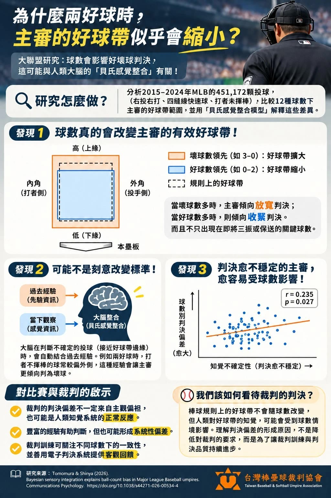

前言：那一顆到底是好球還是壞球？
假日的比賽，投手投到兩好球，一顆削在好球帶邊邊的球被判了壞球，場邊有人嘆了一口氣。
換到另一邊球數落後的時候，一顆偏高的球被拉弓判出局，又有人小聲嘀咕：「主審是不是在幫對面平衡一下？」
這種爭論不只基層有，大聯盟的球迷和球員一樣常吵。日本廣島大學的研究團隊最近在《Communications Psychology》發表了一篇研究，台灣棒壘球裁判協會也整理成圖解分享出來，他們分析了大聯盟十個球季的投球，替這件事提出一個跟偏袒無關的解釋。

一、球數真的會改變好球帶
研究看的是 2015 到 2024 年大聯盟 451,172 顆打者沒揮棒、由主審判決的投球，圖解裡寫到，條件限定在右投對右打的四縫線快速球，再比較 12 種球數下，主審實際的好球帶有多大。
結果跟很多人在場邊的感覺差不多，壞球比較多的時候，例如 3 壞 0 好，好球帶會變大，好球比較多的時候，例如 0 壞 2 好，好球帶會變小。
而且不是只有快要三振或保送的關鍵球數才這樣，其他球數也看得到。
二、主審可能不是故意的
很多人第一個反應是，那就是主審偏心了。研究給的解釋跟偏心無關，用的是腦科學裡的「貝氏感覺整合」，意思是大腦在判斷的時候，會把眼睛當下看到的，和過去累積的經驗混在一起，看得越不清楚，就越靠經驗。
講電話收訊不好的時候，對方有一個字沒聽清楚，你會照前後文自動補上，補的時候自己通常沒發現，大腦處理邊界球的方式有點像這樣。
兩好球的時候，打者會拚命保護好球帶，靠近好球帶的球多半都揮了，沒揮的球，常常本來就偏外面。主審看過這麼多球，大腦早就記住這件事，遇到一顆貼著邊邊、眼睛不太確定的球，經驗就可能把它往壞球推一點。
研究團隊用這個模型去算，算出來的好球帶變化，跟實際判決的變化很接近。他們也分析了 89 位主審，判決比較不穩定的主審，受球數影響也比較大，圖解裡的相關係數是 0.235，關係不算強，方向和模型預測的一樣。
三、回到社區少棒的球場
這篇研究看的是大聯盟，沒有測過少棒的裁判，不過場上的條件可以對照一下。
社區少棒的裁判，很多是基層的 C 級裁判，或是剛考到證照的熱心同好，他們頂著大太陽、穿著厚重的護具站一整天，很多時候就是為了讓孩子有一場完整的比賽可以打。
紅土球場上沒有重播，也沒有電子好球帶，每個孩子的身高和站姿又都不一樣，好球帶的邊界更難抓。
所以遇到大家看法不同的邊界球，我會先把它當成人眼的極限，不會先認定主審在針對哪一隊。
四、一顆爭議球，孩子可以學到什麼
在港湖特訓班，我們教投球機制和打擊發力，也很在意孩子遇到挫折時的反應。
上課時我們很常問孩子一句話：「你剛剛那球為什麼會揮空？」講得出原因，下一球就知道要調整什麼，這也是我們的教學理念裡一直在做的事，把孩子的注意力帶到下一球。
爭議球也可以這樣看，風向、場地的不規則彈跳、主審的判決，孩子都控制不了，他能控制的是自己的專注，還有下一球要怎麼做。
所以每堂課的後段，我們會把剛練的東西放回比賽情境裡再練一次，比賽裡什麼狀況都可能發生，我們希望孩子習慣的，是遇到不順之後還能把下一球做好。
孩子練到挫折的時候，我們會先把難度降下來，讓他感覺得到自己有進步（這部分在難度剛剛好，才學得最多寫過）。一顆不順的判決也是一種挫折，先做好自己做得到的事，信心比較不會跟著掉。
打者兩好球之後，邊邊的球要有出棒保護的準備。研究說的「好球帶變小」是平均的趨勢，一顆貼邊的球會判哪一邊，當下還是說不準，看著球進來再等主審舉手，風險就全交給別人了。
投手投了一顆自己覺得是好球的球沒被判，可以深呼吸一下，把注意力放回下一球要投到哪裡。
場邊的大人也有影響（可以參考場邊的提醒，是幫忙還是干擾？），爭議球出現的時候，大人先嘆氣或對著裁判喊，孩子的注意力也會跟著跑到裁判身上，大人沉得住氣，孩子才比較能把專注力放在場上，想著下一球該怎麼準備。
- 台灣棒壘球裁判協會。《科學新知》為什麼兩好球時，主審的好球帶似乎會縮小？科學研究提出了新的解釋！
- Tomomura, M., & Shinya, M. (2026). Bayesian sensory integration explains ball-count bias in Major League Baseball umpires. Communications Psychology.

港湖特訓班資深教練，教學 14 年，專長打擊與守備。
看陳凱文教練的其他文章 →